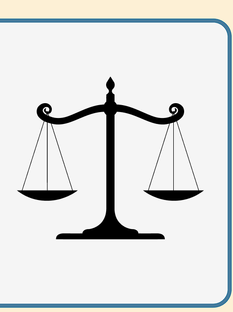

History, Mission, and Values
Our organization was started in 2020 as a way to unite college students who are interested in the sport of archery. Originally, it was held remotely at the University of South Carolina through Zoom calls meant to discuss archery and build a community of those who are passionate about the sport. Over time, as things opened up, we started to meet at our school physically and practice the sport.
We started to host our own competitions and participate in local ones in the city of Columbia. Now, we are chapter-based and operate in many other universities across the Southeast. We eagerly look forward to anyone who wants to join, whether they are a master at archery or have never picked up a bow—everyone is welcome!
Our mission is to educate those on the sport of archery and foster a community of those who love the sport. Our top value is to include everyone who walks through our doors. We discriminate against no one and treat everyone as equal.
Leadership
Our national president is headed by Gabriel (me) and vice-president Jack. We are the first two members who originally had the idea for a club dedicated to college students interested in archery. We have now grown to a fairly large organization with around 2,500 members.
We also have a treasurer, Mia, who helps manage our finances and fundraising efforts. Together, we have helped charter several clubs throughout a number of universities and recruit members to our own local chapter here at the University of South Carolina.
As those in a leadership position, we actively try to hear from everyone who has any good ideas about our organization. If you have something you would like to tell us or suggest, we personally check all form submissions, so feel free to reach out!
Click on the image to see our other members:

Upcoming Activities
Slideshow placeholder